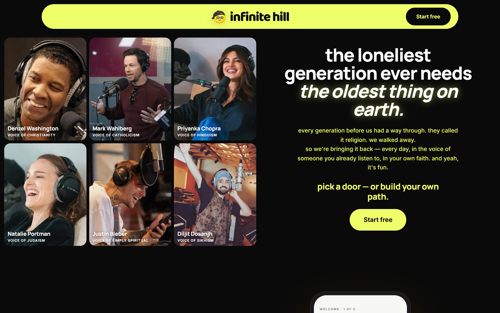
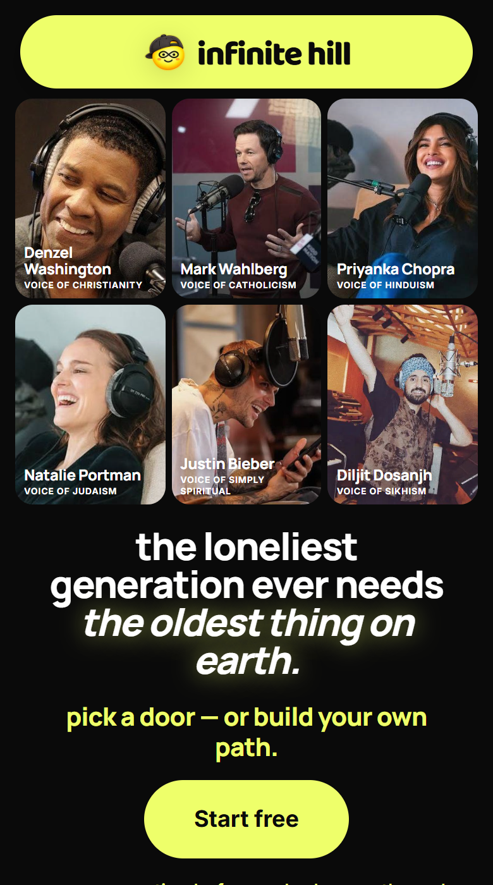
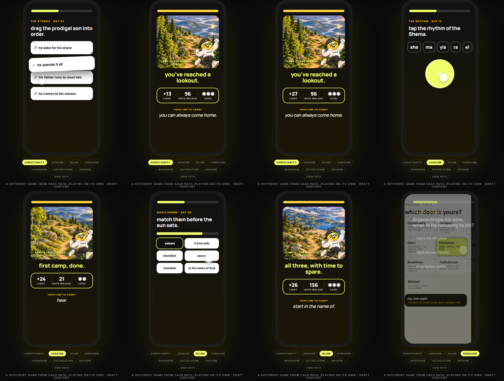
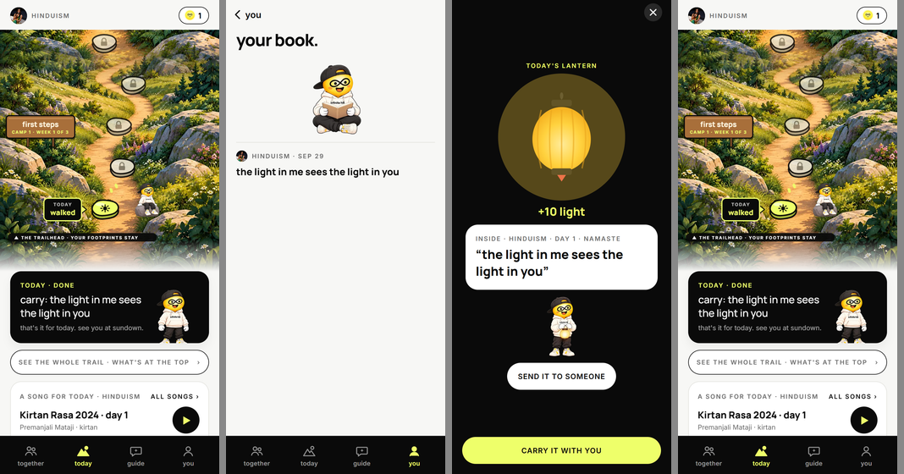

the loneliest generation ever needs the oldest thing on earth.
How infinite hill looks, sounds and behaves, written down from the website and app as they are today, plus everything we've decided along the way. It replaces the early drafts.
working draft · 29 Sep 2026 · for Shaan and Gus
01 · our story
every generation had a way through. we walked away.
Every generation before us had a way through hard days. They called it religion. Ours walked away from it, and replaced it with a feed. infinite hill brings it back: a few minutes a day, in the voice of someone you already listen to, in your own faith, or in a path built around you. And it plays like a game.
mission
make religion cool again.
Show a new generation what their grandparents knew, in a form they actually want to open.
the promise
it plays like a game. it's taught like a faith.
The fun lives in the practice. The faith is treated with care, checked by the people who keep it.
the stance
we don't care which door. we care that you have one.
Eight doors: seven traditions and "my own path". We never compare them and never push one.
the golden rule is undefeated.the line we close on · every tradition landed on it
Founder's story: to be written in Shaan's own words. It isn't on the website yet, by choice.
02 · values
what we hold to, every screen.
These came from real decisions in the product, not a workshop. Each one already changes how something works.
your door is yours.
People choose their path. Someone who wants to stay in their own tradition never sees another religion unless they ask. "Stay on my path" is the default.
never pushy.
No "try Judaism tonight". Other traditions appear only as a gentle, one-minute taste for people who said they love that, and a taste never switches anyone's course.
we score learning, never faith.
Points for knowing a word or a story. Never for praying, never for believing. The breath, the sit and the line you carry have no timer and no score.
honest about what's real.
Lessons say "draft · waiting on a Keeper's review" until a scholar signs off. Features that aren't switched on say so. We don't claim a voice or a Keeper has signed until they have.
joy is allowed.
A mascot that cheers, a sunrise when you finish, a lantern you can send a friend. Serious about faith; never solemn about ourselves.
everyone is welcome, including unsure.
Grew up in a faith and not sure anymore, never had one, practice every day: each gets a way in that fits, and nobody is asked to believe anything.
a company that gives.
infinite hill is a for-profit company, so it can pay its own way and never has to beg. Part of what it earns goes to the Infinite Hill Foundation, a separate nonprofit being set up now. Anything someone gives inside the app goes to the Foundation in full. The Foundation funds scholarships so people who can't pay still get the year, free plans for students and youth groups, and the traditions our lessons come from.
How we say it: "part of what we earn goes to the Infinite Hill Foundation". Always add "in formation" until the papers are filed, and don't name a percentage until one is set.
03 · personality
we are this, but not that.
warm
We sound like a friend who's glad you came.
but not gushing. No "amazing!!", no hype.
playful
Games, a mascot, a streak of light.
but not flippant about faith. The joke is never on a belief.
reverent
Every tradition is taught from its own texts, carefully.
but not churchy, preachy or hushed.
clear
Short sentences. Plain words. American spelling.
but not dumbed down. The stories are the real ones.
modern
Lemon, black, pills, a phone-first game.
but not trendy for its own sake. It has to feel right in five years too.
for everyone
Every door gets the same care and the same look.
but not blended into one mush. Each tradition stays itself.
04 · who we're for
seven people we build for.
Unlike the brand books we studied (ipsy, Honest, ShoeDazzle), we're pre-launch: these are hypotheses, each with a way to check it. Every persona can come from any tradition, so names never hint at a religion. The app's first question ("where are you with religion right now?") already sorts people this way.
Maya
the returner · 31
"I grew up Catholic. I'm not sure what I believe anymore, but I miss something about it."
Grew up in a faith and drifted. Put off by rules and judgment. Feels the gap at weddings, births and funerals. Example backgrounds: Catholic, Hindu.
reads
her own tradition with fresh eyes: the stories she half-remembers, told properly.
plays
"what does it actually mean?", true or myth, put the story back in order.
writes
one line kept in her book; "what I used to think" once a week.
practices
one breath, growing to a short sit.
what we want her to do: come back three days in a row, then keep a line every week.
How we'll know: 5 Returners use "your roots, with fresh eyes" for a week; do they come back on day 3?
Sam
the deepener · 42
"I pray every day. I've never read the book cover to cover."
Already committed. Wants depth, not an introduction. Will spot a mistake instantly, so scholar review matters most here. Example backgrounds: Muslim, Sikh.
reads
the texts in order: a surah a day, Japji verse by verse, the weekly portion.
plays
higher levels, "go deeper", typing and saying words in the original.
writes
notes on a verse; questions for the Guide.
practices
their own tradition's practice, with the festival calendar.
what we want him to do: finish a whole text and tell someone.
How we'll know: do Deepeners reach level 3 and use "go deeper" weekly?
Jordan
the seeker · 26
"I'm not religious. I just want something steady."
Put off by "organized religion", curious about the Stoics, Rumi, meditation and the research. Takes "my own path".
reads
wisdom stories from every tradition, each with its source.
plays
match the idea to its source, the quick round, the rhythm.
writes
an evening review.
practices
breath, walking, a body scan. Yoga would fit here.
what we want them to do: build a daily practice that's theirs, and try one week inside a tradition.
How we'll know: does a Seeker take a "taste from next door" and keep the line?
Priya & Dan
the bridge-builders · 34
"My partner is Jewish and I'm Hindu. I want to understand her family before Passover."
Learning someone else's door out of love. Needs practical, respectful basics fast.
reads
the holiday coming up; what the words at the table mean.
plays
say it back; match the word to its meaning.
writes
questions to ask their partner.
practices
the blessing, the greeting, one ritual together.
what we want them to do: walk two doors side by side and send each other a lantern.
How we'll know: do couples send lanterns back and forth in the first week?
Nicole
the parent · 38
"I want my kids to know where we come from, and I'm not sure I know enough to teach them."
Buys for the family. Learns alongside the kids. Example background: Christian mom of two.
reads
kid versions of the stories, with a note for grown-ups.
plays
a family quiz at the table.
writes
the family's line of the week.
practices
a table blessing; one breath before bed.
what we want her to do: one lesson a week, together, at the table.
How we'll know: do families with kids' profiles open the app together on weekends?
Ray
the hard season · 55
"My dad died in March. I keep going back to the prayers I learned as a kid."
Arrives in pain, often at night. Needs gentleness, not a streak. Comfort, never advice, and a pointer to real help.
reads
what his tradition says about grief and hope.
plays
little or nothing. The games step back.
writes
a private note to the person he lost.
practices
his tradition's mourning prayers; a lantern at night.
what we want him to do: come back tomorrow night, and feel less alone.
How we'll know: we don't measure this one with streaks. We ask.
Zoe
the fan · 19
"Wait, Priyanka Chopra reads the Hindu one? I'll try it."
Arrives through a celebrity. Curious, low commitment, the biggest top of funnel and the easiest to lose on day two.
reads
day one in her star's voice.
plays
everything fast: the quick round, glowing ×3.
writes
one tap: "keep it".
practices
one breath.
what we want her to do: finish day one, come back on day two, send one friend.
How we'll know: day-2 return rate for people who arrive from a celebrity's link.
05 · voice
how we sound today.
Taken from the copy that's live now. It's close to what we want; the open questions at the end list what's still being decided.
We talk to you the way a friend who knows the stories would: "one breath. that's the practice." "not quite, that's what the week is for." "right where you left it."
We never tell anyone what to believe, never say a missed day is a failure, and never claim the science "proves" faith.
moment
what we say (live)
why
a right answer
yes — exactly.that's it.right on.lit.
short, warm, a little variety so it never feels canned
a wrong answer
almost. then the answer, then okay, next
a shrug, never a scold; the reveal is the interesting part
finishing a lesson
you're on the hill! · day 12. done! · proud of you. see you tomorrow.
the one place we celebrate out loud
coming back after a gap
rest days had your back. your streak is still here. · (if it did break) earn your streak back: finish 2 lessons today.
no guilt, ever; rest is built in, and a way back is always free
the streak
one lesson a day grows it. rest days protect it. · 7 days, no rest day needed: golden streak.
the sun is our flame and the number leads. rest days are soft moons, never red
the streak saver (8 pm)
your 12-day streak would love one lesson tonight. i'll keep the lantern on.
only when no rest day is left; never on a quiet day, never at bedtime
after a quiet week
we'll stop reminding you for now. your hill will be right here.
then we go quiet
the day's end
carry: the light in me sees the light in you. · see you tomorrow.
one line to take into the day
day one's promise
nobody here will ever tell you what to believe.
we ask how you hold your faith, gently; we never tell
another tradition
a taste from next door · your path stays yours
curiosity, never conversion
words we never use about faith
convertthe same as (another faith)better thanyou should believescience provesfailed / broke your streakorganized religion (as a put-down)
Style: American spelling everywhere (practice, honor, color, center, neighbor). Product surfaces are lowercase; prose and legal use "Infinite Hill".
06 · the look
lemon, black, and a lot of air.
lemon#EEFF6A · the one accent
ink#0A0A0A · type, dark sections
cream#F7F7F5 · app background
sand#ECECE8 · quiet panels
white#FFFFFF · cards
mute#6B6B6B · small labels
glow#FFD23F · "glowing ×3" only
coral#E5484D · "almost." only
Baloo 2 ExtraBoldthe wordmark and big celebrations
infinite hill
Manrope ExtraBoldheadlines, one italic word for emphasis
it plays like a game. it's taught like a faith.
Interbody, buttons, small uppercase labels
a story, a game, a breath. then one line to carry into your day. day 21 · first camp done
shapes
Pills for buttons, chips and the floating top bar. Cards at 18–24px corners. Nothing sharp.
the website's rhythm
A centered logo in a lemon bar; the celebrity collage and the headline; the game demo in a phone; eight doors; a day on the hill; the evidence; plans; Keepers; FAQ; a lemon footer with the big wordmark.

The website's first screen on a computer.

On a phone: faces, headline and Start free together.

The demo: a different game for each door, ending at a lookout.
07 · the guy
one character, sixteen moods.
A round yellow face with an infinity mask, a white "infinite hill" hoodie, black joggers and yellow-striped sneakers. He's the guide, not the faith: he cheers your effort, never a belief. These are the live animations.
wavehello; the start of a lesson
thinkwhile you answer
cheera right answer
celebratethe win screen, the summit
meditatethe breath and the sit
walkup to today's stone
climbthe 100 days; hard parts
sit on rockafter today's lesson
sleepthe hill after 8pm
readyour book
lanterntoday's lantern, lit
sunrise stretchlighting your day
namastebefore the lantern; the FAQ
thumbs uptoday's done; pricing
peekon the website
tapwhen you tap him
rules for the guy
Always fully in frame, never cropped. Never jokes about God, scripture or ritual. Never wears one tradition's dress. Still pictures for anyone who's turned motion off. New moods are made as 3-second loops on pure green, then keyed.
motion, in general
Dignity for the faces and the faith: celebrity photos only drift slowly. Play lives inside the phone and in the guy. Sounds are bell-like, never buzzers. Every animation ends calm.
08 · the world
a hill you climb for five years.
Every path is a painted trail. Each day is a stone; each camp ends at a lookout with its own painting; the top is the summit, day 1,791.
first stepscamp 1 · day 21the storiescamp 2 · day 96the practicescamp 3 · day 156the textcamp 4 · day 231the big lookoutend of year one · day 331the rangesyears 2–5the summitday 1,791

In the app: the hill after today's lesson, your book, today's lantern.
Painting style: warm, painterly storybook, golden-hour light, a sandy trail up the middle; no people, no single religion's buildings.
09 · the game
our words for the game.
Borrowed from nobody. These are the names people see.
door
a path: seven traditions and "my own path".
the climb · the trail
the five years, drawn as a hill.
stone
one day's lesson on the trail.
camp · lookout · summit
the stages, the painted stop at each end, the top.
light
points earned in a lesson (for learning, never faith).
glowing ×3
three right in a row.
levels
first steps · steady · deeper · sure-footed · keeper-level. Shown as five small suns.
today's three
finish the lesson, a clean run, keep a line.
lantern
lights when today's three are done; holds a line; can be sent to a friend.
go deeper
an optional harder round.
quick round
match against the clock, once a week.
your line to carry
the one sentence to take into the day.
your book
the lines you've kept.
walking with
friends you've swapped lanterns with.
a taste from next door
a one-minute look at another tradition, for people who asked.
the Guide
ask anything; it answers from your lessons.
the games
call it · true or myth · put the scenes in order · the pairs · tap what you hear · say it · tap the rhythm · type it · the quick round.
what makes it harder
Closer wrong answers, fewer replays, typing instead of tapping, longer lines. The level moves between lessons, never in the middle of one.
what never counts
Prayer, belief, the breath, the sit. A missed day is never a failure; your days come with you.
the streak
A streak that grows one lesson a day, with rest days built in, because every tradition knows rest. Two rest days to start, never more than two, one earned back every 7 days; a missed day spends one on its own. If a streak breaks, two lessons in a day within three days earns it back, never for money. Seven days with no rest day turns it golden. It can be switched off under You, it stays calm on quiet days, and it never appears in prayers, the journal, the companion or the help card.
10 · the paths
eight doors, each planned to the summit.
door
year one (five camps)
years two to five
Christianity
the parables, Mark read through, the Sermon on the Mount
the Bible in order · church history · where churches differ · the saints in their own words
Catholicism
the Mass in 14 scenes, the rosary, the sacraments
the Bible with the deuterocanon · Church history · the Catechism · Augustine, Thérèse
Judaism
Genesis as a serial, Shabbat, the weekly portion
the Torah and siddur · Prophets and history · Talmud and Maimonides · the sources
Islam
the prophets' stories, salat step by step, the short surahs
the Qur'an surah by surah · the seerah · the pillars and schools · Nawawi's forty
Hinduism
Ganesha to the Gita, the practices, the Upanishads
the founder's own five-year plan
Buddhism
the Buddha's life, metta, the Dhammapada
the suttas · the disciples · the schools · the sources
Sikhism
the ten Gurus, seva and kirtan, Japji Sahib
the Nitnem · the Bhagats and history · the ragas · the Granth in order
my own path
wisdom stories with sources, practices, Rumi with Marcus Aurelius
the Stoics · the big questions · the Tao Te Ching · living it
Days 1–21 are fully written. Everything after is a draft outline, each waiting on that tradition's Keeper.
the social playbook
tastefully playful, never mocking faith.
How infinite hill shows up online. Drawn from how Duolingo built Duo (Kat Chan, their senior director of brand marketing), and bent to fit a faith app. The short version: our mascot's personality comes from what he actually does in the app, we show up where people are already talking, and a few firm rules let the team move fast.
faith is serious. showing up every day can be fun.the creative platform · the line every post answers to
Duolingo's platform is "learning is hard, so we made it fun", and it's why their owl can get away with almost anything: he's pushy for a good cause. Ours does the same job. Every idea should pass one test: does it make showing up feel lighter without making the faith feel smaller?
the mascot's personality bible
Duo became "unhinged" because the app really did nag, and users turned that into a meme; Duolingo leaned into what was already true. Copying "mascot + chaos" without that root falls flat. Our guy's truth is different: in the app he walks beside you, cheers when you finish, sits on a rock with you late at night, and holds a lantern for your friends. So that's who he is online.
he is
a good walking buddycheeky, never crueleasily delighteda bit extra about streakscurious about every traditionquiet when you're hurting
He'll do a dramatic slow-motion run to your door at 7:59 pm with a lantern. He'll wait on a rock for you in the rain, a little too patiently. He celebrates a 3-day streak like it's a wedding.
he never
threatens, even as a jokeguilt-trips about prayerwears religious dress as a costumedoes a tradition's gesture outside itpicks a sidejokes about grief
Duo's "violence for good" works for Spanish. It would read as spiritual abuse next to prayer. Our pushiness is warm persistence, never menace. (Namaste only on the Hindu path, the same rule as in the app.)
Still open: his name. A named character is far easier to build a social presence around.
where we show up: our lane
"Culture is the new marketing funnel": join conversations already happening, like a good party guest. Duolingo's lane is language and cultures (K-pop, K-dramas), and it stays out of elections. Ours is built in:
the religious calendar
Advent, Lent, Ramadan, Passover, Diwali, Vaisakhi, Vesak. The seasonal quests in the app are the same moments, so every post can point to something real to join.
faith in pop culture
Films and shows with faith at their heart, a celebrity talking about what they believe, the holiday movie everyone argues about. We add the story behind the word.
interfaith families
Two traditions at one holiday table, in-laws, kids asking big questions. The Table and the partner path make this ours.
the loneliest generation
Screen fatigue, the search for meaning, "I grew up with it and drifted". Our founding line lives here.
Off-limits: elections and party politics, wars and conflicts between faiths, scandals inside any religion, and "which religion is right" debates.
the rules: a floor, not a ceiling
Duolingo writes firm dos and don'ts for sensitive topics, then lets the team ship without sign-off on every post. We need that more than anyone.
always
never
make fun of ourselves, the mascot and modern life
make fun of a belief, a practice, a text or a holy person
say who does what ("many Catholics…, many Protestants…")
rank religions, or say one is right
quote real texts, with the source
invent a quote or a prayer
celebrate every tradition's big days on their own terms
mash two traditions into one joke
be gentle when the moment is heavy
use grief, illness or a tragedy for reach
speak to people with no religion as warmly as to the devout
imply someone needs to believe
One extra step Duolingo doesn't need: anything about a specific tradition gets a two-minute check by someone from inside it (a Keeper, once signed) before it goes out.
how the team works
shortest path from idea to post
Small team of people who can think, write, edit and post. Speed matters most for reactive moments.
plan room for the unplanned
Leave space each month for moments nobody saw coming. Duolingo says its biggest hits were unplanned.
partnerships take years
Their Squid Game collab came after two or three years of friendly check-ins. Start warm relationships now with faith-film studios, youth groups, schools and the voices' teams.
hire for taste
Taste is harder to teach than execution. Judge it with a take-home ("10 post ideas for us") and a live riff, not interviews alone.
AI for the spark, humans for the idea
AI averages everything, and good ideas live off the average. Posts are written by people.
protect the team
Creativity needs trust. Look back at the body of work together; don't punish one post that missed.
short video: how it actually gets made
From Zaria Parvez, who started Duolingo's TikTok alone in 2021 and grew it past 8 million followers with almost no budget.
our real competitor is the feed
Not other faith apps. If people are scrolling, they aren't on the hill. That's also our founding line ("ours replaced it with a feed"), so we go where the feed is and bring the lesson there.
start with a real suit and small human moments
Duo's TikTok began with a costume sitting unused in a corner of the office. Get a mascot suit early. The unexpected moment (the mascot in a grocery line, at a youth group, trying to sit still) beats any polished ad.
the account is a sitcom
Every post is an episode; some go viral, some just build the storylines. Give the mascot a small recurring cast and running bits. New followers get dropped in the deep end: trust them to catch up.
the comment section is the brief
When people say what they want to see (or joke about who the mascot looks like), make that. Duo's "crush" on Dua Lipa came straight from comments.
start by commenting
Before we have videos, the mascot can comment on other people's posts about faith, holidays, grandparents and the loneliness of the feed. That's how Duolingo's account started.
steal like an artist
Use trending sounds and formats with our own spin, and credit the creator. Once people know us, move on to storylines of our own.
candy and medicine
The video is the fun part; the app shows up in the caption or a pinned comment. Not every post has to say what the app does.
the group chat test
If you didn't work here, would you send it to your group chat? Did you laugh making it? Show a teenager and someone from another faith before posting.
quality over a posting schedule
Nobody misses a brand account for two weeks. Burnt-out posting makes worse posts.
plan two weeks out, with a veto card
Keep a loose plan. Anyone can bump it for a moment that's happening today.
one owner per platform
About three-quarters of posts get reused across platforms; a quarter get rebuilt for each. Whoever lives on that platform decides.
keep it in-house and scrappy
Duolingo's agency content didn't hit; an employee who cared did. About 95% of their reach was free. Tight budgets make better ideas.
hire troublemakers
People who grew up between cultures are good at this, and for us especially: someone raised in an interfaith family, or bicultural and bilingual, already knows how to speak to two worlds at once. A stand-up comedian on the team is not a crazy idea.
measure it simply
About a million views counts as a hit. Ask new people "how did you hear about us?" in the app, and watch sign-ups the day a video lands. The real sign is when people talk about us in their group chats.
Zaria's biggest lesson from a mistake: a trend that reads as harmless to one group can read very differently to another. For us, that check is "would someone from this faith wince?"
the next twelve months
when
moment
for which path
Oct 11–19, 2026
Navaratri
Hinduism
Nov 6–10, 2026
Diwali
Hinduism, and anyone curious
Nov 24, 2026
Guru Nanak's Gurpurab
Sikhism
late Nov 2026
Thanksgiving: gratitude in every tradition
everyone
Nov 29 – Dec 24, 2026
Advent (the first quest people will see)
Christianity, Catholicism
early Dec 2026
Hanukkah (dates to confirm)
Judaism
Dec 21, 2026
the winter solstice
my own path
Dec 25, 2026
Christmas, and interfaith families at the table
everyone
Jan 1–21, 2027
the new year: "one lesson a day" resolutions
everyone, my own path quest
Feb 1–7, 2027
World Interfaith Harmony Week (UN)
everyone
Feb 8 – Mar 8, 2027
Ramadan · Eid al-Fitr Mar 9
Islam
Feb 10 – Mar 21, 2027
Lent · Easter Mar 28
Christianity, Catholicism
April 2027
Passover (dates to confirm)
Judaism
Apr 14, 2027
Vaisakhi
Sikhism
Apr 23 – Jun 10, 2027
counting the Omer
Judaism
May 2027
Mental Health Awareness Month (US): practice, rest, reaching out
everyone
May 20, 2027
Vesak
Buddhism
Jun 21, 2027
the summer solstice
my own path
from Jul 19, 2027
the rains retreat (Vassa)
Buddhism
Aug–Sep 2027
back to school: youth groups and schools
parents, schools
Sep 30 – Oct 11, 2027
Navaratri · Rosh Hashanah Oct 2 · Yom Kippur Oct 11
Hinduism, Judaism
Dates marked "to confirm" aren't in the app's quest calendar yet. Lunar dates can vary by community.
twenty posts to start with
The mascot sprints to your door at 7:59 pm holding a lantern: "your streak would love one lesson tonight."
"words you've been saying your whole life": amen, hallelujah, namaste, salaam, shalom. One a day, with the story behind it.
Rest days explained in eight words: "one lesson a day grows it. rest protects it." The mascot napping on a moon.
Golden streak reveal: the number turns gold, the mascot can't handle it.
Advent countdown: 24 short "why do we do this?" posts (wreaths, candles, the manger).
"my partner is Jewish and I'm learning": a real interfaith couple, before and after Passover.
"a talent was a weight of silver": the story that changed a word in the dictionary.
The mascot waits on a rock in the rain for someone who hasn't opened the app. Caption: "no pressure. (some pressure.)"
Ramadan, from a non-Muslim coworker's view: "how to be respectful without making it weird."
"the rule that keeps turning up": the golden rule across traditions, each named and quoted.
Day 100 party: a cake shaped like the hill.
"what your grandmother knew by heart": followers share one line a grandparent always said.
Diwali: the lamp at dusk, how it's done, and why.
"alhamdulillah on the bad days": the difference between thanks and praise.
Friend streaks: two friends, two different faiths, "30 days together."
Pascal's 1910 line vs. the poster version: "we checked the quote."
Year-in-review cards: "you spent 31 hours with the Psalms this year."
Duet a creator's "I grew up religious and drifted" video with a warm "your hill will be right here."
The mascot tries to sit still for one minute and fails, then succeeds.
"the loneliest generation needs the oldest thing on earth", as a manifesto film with the voices.
11 · faces
voices, keepers, and the guide.
the voices
A famous person from each tradition reads its lessons: the hook. On the site as the founding class for the pitch; not signed yet, and the app uses "the house voice" until they are.
the keepers
A scholar of each tradition reviews every lesson before it's recorded, with a veto. Keepers are scholars (people who have spent their careers studying the texts, respected inside the tradition and out), not clergy chosen to serve one community; some are also ordained. Shaan recruits them directly. Named on the site as targets for the pitch; not signed yet.
the guide
The in-app helper. Warm, brief, answers from your own lessons, never preaches, and points to real people for deep questions.
12 · still open
what we haven't decided.
The mascot's name.
The headline to lead with: "the loneliest generation…", "making religion cool again", or "it plays like a game. it's taught like a faith."
The right-answer words: keep the variety ("yes — exactly", "lit.") or narrow to two ("right on." / "not quite.").
Exclamation marks: only on the win screen, or nowhere.
Which persona we build for first (the suggestion: Maya, the Returner).
Whether to add journaling, a grief path and yoga, and where the line is so we don't become a meditation app.
The founder's story, in Shaan's words, and where it lives.
How much of what the company earns goes to the Infinite Hill Foundation, and when we say the number publicly (after legal and accounting advice).
infinite hill brand book v2 · built from infinite-hill.netlify.app and the app as of 29 Sep 2026 · replaces the August drafts · persona names and backgrounds are illustrative.

tastefully playful, never mocking faith.
How infinite hill shows up online. Drawn from how Duolingo built Duo (Kat Chan, their senior director of brand marketing), and bent to fit a faith app. The short version: our mascot's personality comes from what he actually does in the app, we show up where people are already talking, and a few firm rules let the team move fast.
Duolingo's platform is "learning is hard, so we made it fun", and it's why their owl can get away with almost anything: he's pushy for a good cause. Ours does the same job. Every idea should pass one test: does it make showing up feel lighter without making the faith feel smaller?
the mascot's personality bible
Duo became "unhinged" because the app really did nag, and users turned that into a meme; Duolingo leaned into what was already true. Copying "mascot + chaos" without that root falls flat. Our guy's truth is different: in the app he walks beside you, cheers when you finish, sits on a rock with you late at night, and holds a lantern for your friends. So that's who he is online.
he is
He'll do a dramatic slow-motion run to your door at 7:59 pm with a lantern. He'll wait on a rock for you in the rain, a little too patiently. He celebrates a 3-day streak like it's a wedding.
he never
Duo's "violence for good" works for Spanish. It would read as spiritual abuse next to prayer. Our pushiness is warm persistence, never menace. (Namaste only on the Hindu path, the same rule as in the app.)
Still open: his name. A named character is far easier to build a social presence around.
where we show up: our lane
"Culture is the new marketing funnel": join conversations already happening, like a good party guest. Duolingo's lane is language and cultures (K-pop, K-dramas), and it stays out of elections. Ours is built in:
the religious calendar
Advent, Lent, Ramadan, Passover, Diwali, Vaisakhi, Vesak. The seasonal quests in the app are the same moments, so every post can point to something real to join.
faith in pop culture
Films and shows with faith at their heart, a celebrity talking about what they believe, the holiday movie everyone argues about. We add the story behind the word.
interfaith families
Two traditions at one holiday table, in-laws, kids asking big questions. The Table and the partner path make this ours.
the loneliest generation
Screen fatigue, the search for meaning, "I grew up with it and drifted". Our founding line lives here.
Off-limits: elections and party politics, wars and conflicts between faiths, scandals inside any religion, and "which religion is right" debates.
the rules: a floor, not a ceiling
Duolingo writes firm dos and don'ts for sensitive topics, then lets the team ship without sign-off on every post. We need that more than anyone.
One extra step Duolingo doesn't need: anything about a specific tradition gets a two-minute check by someone from inside it (a Keeper, once signed) before it goes out.
how the team works
Small team of people who can think, write, edit and post. Speed matters most for reactive moments.
Leave space each month for moments nobody saw coming. Duolingo says its biggest hits were unplanned.
Their Squid Game collab came after two or three years of friendly check-ins. Start warm relationships now with faith-film studios, youth groups, schools and the voices' teams.
Taste is harder to teach than execution. Judge it with a take-home ("10 post ideas for us") and a live riff, not interviews alone.
AI averages everything, and good ideas live off the average. Posts are written by people.
Creativity needs trust. Look back at the body of work together; don't punish one post that missed.
short video: how it actually gets made
From Zaria Parvez, who started Duolingo's TikTok alone in 2021 and grew it past 8 million followers with almost no budget.
Not other faith apps. If people are scrolling, they aren't on the hill. That's also our founding line ("ours replaced it with a feed"), so we go where the feed is and bring the lesson there.
Duo's TikTok began with a costume sitting unused in a corner of the office. Get a mascot suit early. The unexpected moment (the mascot in a grocery line, at a youth group, trying to sit still) beats any polished ad.
Every post is an episode; some go viral, some just build the storylines. Give the mascot a small recurring cast and running bits. New followers get dropped in the deep end: trust them to catch up.
When people say what they want to see (or joke about who the mascot looks like), make that. Duo's "crush" on Dua Lipa came straight from comments.
Before we have videos, the mascot can comment on other people's posts about faith, holidays, grandparents and the loneliness of the feed. That's how Duolingo's account started.
Use trending sounds and formats with our own spin, and credit the creator. Once people know us, move on to storylines of our own.
The video is the fun part; the app shows up in the caption or a pinned comment. Not every post has to say what the app does.
If you didn't work here, would you send it to your group chat? Did you laugh making it? Show a teenager and someone from another faith before posting.
Nobody misses a brand account for two weeks. Burnt-out posting makes worse posts.
Keep a loose plan. Anyone can bump it for a moment that's happening today.
About three-quarters of posts get reused across platforms; a quarter get rebuilt for each. Whoever lives on that platform decides.
Duolingo's agency content didn't hit; an employee who cared did. About 95% of their reach was free. Tight budgets make better ideas.
People who grew up between cultures are good at this, and for us especially: someone raised in an interfaith family, or bicultural and bilingual, already knows how to speak to two worlds at once. A stand-up comedian on the team is not a crazy idea.
About a million views counts as a hit. Ask new people "how did you hear about us?" in the app, and watch sign-ups the day a video lands. The real sign is when people talk about us in their group chats.
Zaria's biggest lesson from a mistake: a trend that reads as harmless to one group can read very differently to another. For us, that check is "would someone from this faith wince?"
the next twelve months
Dates marked "to confirm" aren't in the app's quest calendar yet. Lunar dates can vary by community.
twenty posts to start with